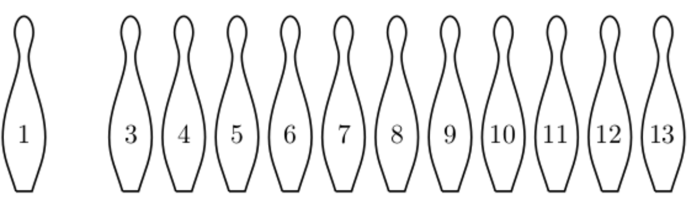

Programming · X 2017
Welcome to Day 2 of MINET X 2017. We hope you have as much fun solving the problems as we had making them. Let's explore the world of functional programming today with the help of Haskell. You have been provided with the interpreter needed to solve the questions.
Whenever you wish to attempt a question, raise your hand and one of us will come to you. If you have any questions about the problems, feel free to ask. The scoring method followed is the same as yesterday. Think-MAKE-Repeat. Have fun. Best of luck !
Functions play a prominent role in describing the semantics of a programming language, since the meaning of a computer program can be considered as a function from input values to output values. Haskell will help you explore a new paradigm of programming today.
Setup and Instructions
You will find WinHugs program on your desktop screens. Today you will be working on those. Open it and explore.
The prompt > means that the interpreter is ready to evaluate an expression.
Example
14
> sqrt (3^2 + 4^2)
5.0
When developing a Haskell script, it is useful to keep two windows open, one running an editor for the script, and the other running the interpreter.
Start an editor, type in the following two function definitions, and save the script as test.hs
quadruple x = double (double x)
Open the file using the interpreter. Now both the standard library and the file test.hs are loaded, and functions from both can be used.
40
> take (double 2) [1,2,3,4,5,6]
[1,2,3,4]
Return to the editor, add the following definition, and resave.
Here div is a predefined function that returns the quotient of the two operands. It does not return float type values.
The interpreter does not automatically detect that the script has been edited, so a reload command must be executed before the new definitions can be used.
> average [1,2,3,4,5]
3
Haskell is case sensitive. Functions and argument names must begin with lowercase letter. Also by convention, list arguments usually have an s suffix. Double s signifies a list of lists.
Example
xs ns tss
The layout rule
where b = 1
c = 2
d = a * 2
Space is significant in the syntax. Tabs are not accepted.
You will also find HELP.hs on your desktops which is a collection of all the example functions you will come across in this document. Open the file using the interpreter and use it for testing. In the file you will also find a list of predefined functions in the comments section which you can use to solve the questions faster.
When you are attempting any question please write your code in a separate notepad file and save it with *.hs extension and then execute it using the interpreter.
If you face any issues or have any queries, please don’t hesitate to ask.
Haskell Introduction
Functions
We deal with with functions everyday from simple addition to solving complex mathematical problems, functions play an important role.
A Function transform inputs to outputs working over a certain range of values called the domain of the function and giving a certain range of values called the range of the function.
In programming, the programmes that we build can be thought of as functions that convert the given inputs to desirable outputs.
Haskell is a lazy functional programming language, the expressions are not evaluated until their results are actually needed.
Functional Programming
Functional programming is a programming paradigm—a style of building the structures and elements of computer programs—that treat computation as the evaluation of mathematical functions and avoids changing-state and mutable data.
So, when we write a program in a functional programming language, what we are doing is specifying the rules that describe how to generate a given output from a given input. And when we compute in a functional programming language, we apply these rules to the input that is given to us in order to actually produce the output that is expected. Haskell programs is centered around evaluating expressions rather than executing instructions. Thus, it is a functional language
Example
Summing the integers 1 to 10 in C++:
for (i = 1; i <= 10; ++i)
total = total + i;
The computation method is variable assignment.
It has mutable data i.e. i and totalare changing in each execution of the loop.
Summing the integers 1 to 10 in Haskell:
55
The computation method is function application.
Function Application in Haskell
Unlike in mathematics, function application have a higher priority than other operators.
Means (f a) + b, rather than f(a + b)
f a b + c*d --HASKELL NOTATION
Types and Function Declaration
In C++ whenever we declare any function we keep in mind the data types of the parameters and always have a return type. Similarly in haskell every well formed has a type and whenever we build a function in functional language it is necessary to declare mapping from values of one type to values of another type.
Example
factorial 0 = 1
factorial n = n * factorial (n-1)
The factorial function takes an integer type value and return an integer. In haskell :: is used to show the data types a function works on.
Haskell has a number of basic types
- Bool - logical values
- Char - single characters
- String - strings of characters
- Int - fixed-precision integers
- Integer - arbitrary-precision integers
- Float - floating-point numbers
List - a sequence of values of the same type.
Tuple - a sequence of values of different type.
['a','b','c'] :: [Char] --ListofCharacters
:type calculates the type of an expression, without evaluating it. You will find a list of expressions with their return type on the HELP.hs document.
Currying
See the following examples closely
add (x,y) = x+y
add1 :: Int -> (Int -> Int) --EXAMPLE2
add1 x y = x+y
add and add1 produce the same final result, but add takes its two arguments at the same time, whereas add1 takes them one at a time.
add1 takes an integer x and returns a function add1 x. In turn, this function takes an integer y and returns the result x+y. Functions that take their arguments one at a time are called curried functions.
Functions with more than two arguments can be curried by returning nested functions
mult x y z = x*y*z
Excess parentheses are avoided when using curried functions
Int -> Int -> Int -> Int
meansInt -> (Int -> (Int -> Int))
Polymorphic and Overloaded functions
A function is called polymorphic if its type contains one or more type variables.
length :: [a] -> Int
For any type a, length takes a list of values of type a and returns an integer. Note that the data type start with an uppercase letter whereas the variable with a lowercase letter.
2
> length [1,2,3,4]
4
A polymorphic function is called overloaded if its type contains one or more class constraints.
sum :: Num a [a] -> a
For any numeric type a, sum takes a list of values of type a and returns a value of type a.
6
> sum [1.1,2.2,3.3]
6.6
Haskell has a number of type classes
- Num - Numeric Types
- Eq - Equality Types
- Ord - Ordered Types
More examples can be found in HELP.hs
Conditional Expression
Functions can be defined using conditional expressions.
signum n =
if n < 0 then -1 else
if n == 0 then 0 else 1
In Haskell, conditional expressions must always have an else branch.
As an alternative to conditionals, functions can also be defined using guarded equations.
| n < 0 = -1
| n == 0 = 0
| otherwise = 1
Pattern Matching
Many functions have a particularly clear definition using pattern matching on their arguments. The and truth table can be written as what follows.
and True True = True
and _ _ = False
The underscore symbol _ is a wildcard pattern that matches any other case i.e. False and True, False and False, True and False with the value False.
Lists
In Haskell, lists are a homogenous data structure. It stores several elements of the same type. That means that we can have a list of integers or a list of characters but we can't have a list that has a few integers and then a few characters.
List Patterns
Internally, every non-empty list is constructed by repeated use of an operator : that adds an element to the start of a list.
[] --IsUsedToRepresentEmptyLists
head (x:_) = x
tail :: [a] -> [a]
tail (_:xs) = xs
More functions can be found in HELP.hs
List Comprehension
Haskell uses similar syntax as mathematical set notations to construct new lists.
Example
In mathematics
This notation represents a set of all numbers x2 such that x is an element of the set {1..5}.
In haskell
[1,4,9,16,25]
The expression <- is a list generator. A list can have multiple generators.
[(1,4) , (1,5), (2,4), (2,5), (3,4), (3,5)]
Multiple generators can be thought of as nested loops.
Later Generators can depend on variables that are introduced by earlier generators
[(1,1),(1,2),(1,3),(2,2),(2,3),(3,3)]
We can restrict the values produced in a list by having various conditions called guards. For instance:
factors n = [x | x <- [1..n],(mod n x) == 0]
[1,3,5,15]
The Zip Function
The zip function takes in two lists and combines each value with the other according to the index.
zip :: [a] -> [b] -> [(a,b)]
[(’a’,1),(’b’,2),(’c’,3)]
Map Function
Map function applies a function to each element of a list.
map :: (a -> b) -> [a] -> [b]
[3,4,5,6]
We can define map in terms of list comprehensions.
Examples of both the functions can be found in HELP.hs
String Comprehension
A string is a sequence of characters enclosed in double quotes. However, strings are represented as lists of characters therefore all functions defined for lists are defined for strings too.
“abc” :: String
> zip “abc” [1,2,3,4]
[(’a’,1),(’b’,2),(’c’,3)]
> length “abcdef”
6
> "abc" ++ "cde" --(++)UsedToAppend
"abccde"
Recursion
The process in which a function calls itself directly or indirectly is called recursion and the corresponding function is known as a recursive function. The basic idea behind recursion can be divided into two important steps, the base case and the recursive step.
- Each recursive call should be on a smaller instance of the same problem, that is, a smaller subproblem.
- The recursive calls must eventually reach a base case, which is solved without further recursion.
For example, the code to calculate the factorial would be
factorial 0 = 1
factorial n = n * factorial (n-1)
Evaluation
= 3 * factorial 2
= 3 * (2 * factorial 1)
= 3 * (2 * (1 * factorial 0))
= 3 * (2 * (1 * 1))
= 3 * (2 * 1)
= 3 * 2
= 6
This function fails for values less than 0, as the second rule is violated and thus the base case is never reached.
length function thought of recursively
length1 [] = 0
length1 (_:xs) = 1 + length xs
zip function
zip1 [] _ = []
zip1 _ [] = []
zip1 (x:xs) (y:ys) = (x,y) : zip xs ys
Quicksort algorithm
- The empty list is already sorted.
- Non-empty lists can be sorted by sorting the tail values the head, sorting the tail values > the head, and then appending the resulting lists on either side of the head value.
The principle behind quicksort
- Pick a pivot element, here it is the leftmost element.
- “Partition” the array into 3 parts
- All elements in this part are less than the pivot.
- The pivot itself.
- All elements in this part is greater than or equal to the pivot.
- Then, apply the quicksort algorithm to the first and the third part recursively.
qsort [] = []
qsort (x:xs) =
qsort smaller ++ [x] ++ qsort larger
where
smaller = [a | a <- xs, a <= x]
larger = [b | b <- xs, b > x]
You will find a lot of examples of functions executed through recursion in HELP.hs
Easy
1 Create a function to find the sum till n terms in the fibonacci series.
4
10
2 Create a recursive function of the predefined function map.
[False,False,True]
10
3 Goldbach's conjecture says that every positive even number greater than 2 is the sum of two prime numbers. Example: 28 = 5 + 23. Write a predicate to find the list of two prime numbers that sum up to a given even integer.
[(5,23),(11,17)]
10
4 Create a function which removes every nth element from a list.
"abdeghk"
10
5 An integer is said to be a palindrome if it is equal to its reverse. For example, 121 and 34543 are palindromes. In this task you will be given an integer N, you must find the smallest integer M ≥ N such that M is a prime number and M is a palindrome.
929
10
6 Create a function which creates a list with the elements repeated n number of times.
"aaabbbccc"
10
7 Create a function which splits a list into two parts where the length of the first part is given. You are not allowed to use any predefined predicates.
("abc", "defghik")
10
Medium
8 Create a function which returns a slice of a list when the initial and the final indices are given.
"cdefg"
20
9 Create a recursive function that implements Bubble sort.
[1,2,5,7,8]
20
10 Given a list, create a function which outputs a number n which tells all the possibilities of creating sublists of different, predefined lengths.
756
20
11 Find the number of ways that a given integer, x , can be expressed as the sum of the nth power of the unique natural numbers.
1 --(10=11+32)onlyonewaypossible
20
12 Create a function which calculates the super digit of a number. The super digit of a number is defined as the super digit of the digit sum of a number x. If x is one digit, then that is the super digit of that number.
2
20
13 Create a function to shift the list n times to the left.
"defghabc"
20
14 Given the cartesian coordinates of a polygon, create a function to finds its perimeter.
4
20
Hard
15 Consider a Bowling Game where all pins are arranged in a horizontal line, instead of triangular formation. Two players have to play this game, and they alternate their turns. Whoever knocks down the last pin(s) will be declared the winner. One can knock down any single pin, or any two adjacent pins at one throw of a bowling ball. Your task is to predict the outcome i.e. WIN or LOSE of the given state of pins, considering that you bowl first. A configuration is represented by a string consisting of latin letters X and I, where I represents a position containing a pin, and X represents a position where a pin has been knocked down. An example of such a configuration is shown in the image below. Here 2nd pin has been knocked down already.

It's representation will be IXIIIIIIIIIII.
Create a function that will display the outcome i.e. WIN or LOSE.
LOSE
> bowler IXIIIIIIIIIII
WIN
50
16 Write a function to which makes a list of all the permutations of its argument.(You may assume that the elements of this list are distinct.) For example, given the argument [1, 2, 3], the result should be a list consisting of the elements [1, 2, 3], [2, 1, 3], [2, 3, 1], [1, 3, 2], [3, 1, 2] and [3, 2, 1] in any order.
[[1,2,3],[1,3,2],[2,1,3],[2,3,1],[3,2,1],[3,1,2]]
50
17 A list ys is a generalised permutation of xs if ys is obtained by rearranging the elements of xs, where one element of xs is specially treated: it may appear any number of times (including zero) in ys. For example, [1,2,1] is a generalised permutation of [1,2] but [1,2,2,1] is not because two elements (1 and 2) appear the wrong number of times in it. Code an Haskell function to determine whether one list is a generalised permutation of another.
True
50
18 Given a chessboard of dimension N x N, consider a Queen which has slightly modified move set. This Queen can be considered as a combination of a normal queen and a knight. Thus can move rowwise, columnwise, diagonally and also move in L-Shaped pattern i.e. 2 rows and 1 column or 2 columns and 1 row away from the initial position like a knight. Write a function that outputs total number of ways to place N Super-Queens on an N x N Chessboard such that none of the Super-Queens are in conflict with each other. Ignore the fact that some of these arrangements are reflections and rotations of each other: all of them count as unique positionings.
4
50